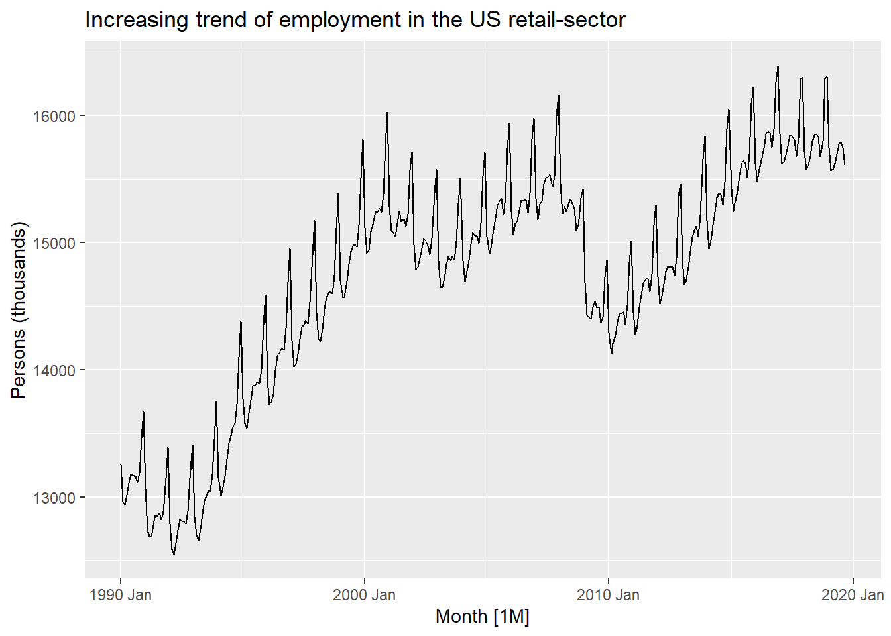
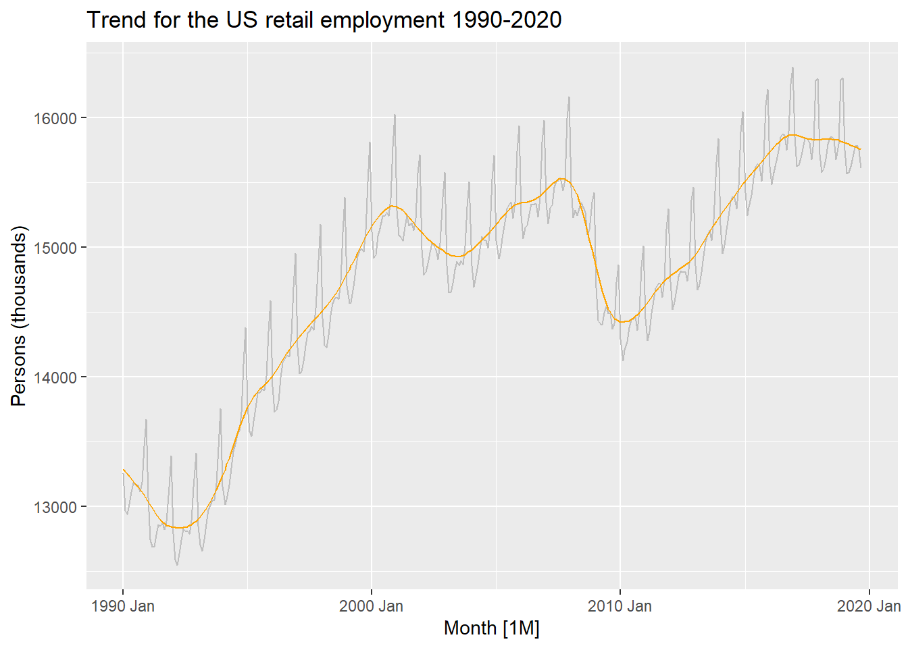
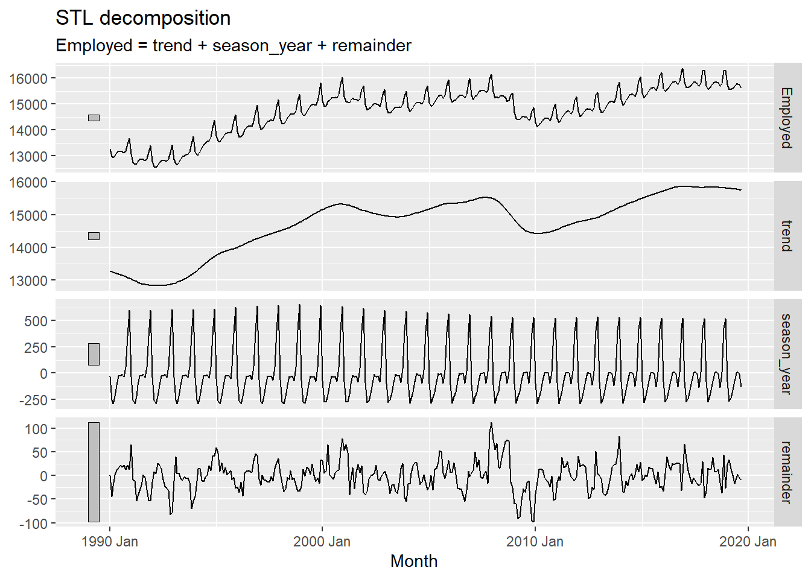
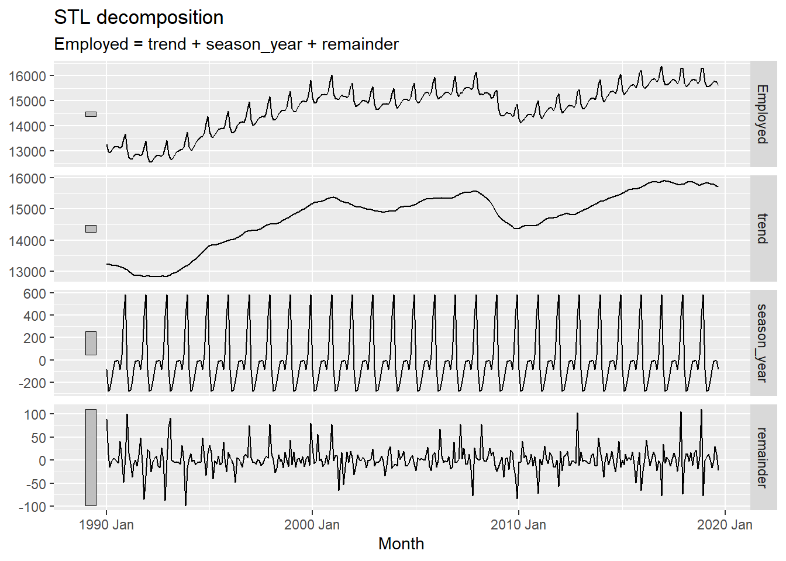

Code
library(fpp2)
library(fpp3)library(fpp2)
library(fpp3)us_employment # A tsibble: 143,412 x 4 [1M]
# Key: Series_ID [148]
Month Series_ID Title Employed
<mth> <chr> <chr> <dbl>
1 1939 Jan CEU0500000001 Total Private 25338
2 1939 Feb CEU0500000001 Total Private 25447
3 1939 Mar CEU0500000001 Total Private 25833
4 1939 Apr CEU0500000001 Total Private 25801
5 1939 May CEU0500000001 Total Private 26113
6 1939 Jun CEU0500000001 Total Private 26485
7 1939 Jul CEU0500000001 Total Private 26481
8 1939 Aug CEU0500000001 Total Private 26848
9 1939 Sept CEU0500000001 Total Private 27468
10 1939 Oct CEU0500000001 Total Private 27830
# ℹ 143,402 more rowsus_retail_employment <- us_employment |>
filter(Title == "Retail Trade") |>
filter(year(Month)>=1990) |>
select(-Series_ID)
us_retail_employment# A tsibble: 357 x 3 [1M]
Month Title Employed
<mth> <chr> <dbl>
1 1990 Jan Retail Trade 13256.
2 1990 Feb Retail Trade 12966.
3 1990 Mar Retail Trade 12938.
4 1990 Apr Retail Trade 13012.
5 1990 May Retail Trade 13108.
6 1990 Jun Retail Trade 13183.
7 1990 Jul Retail Trade 13170.
8 1990 Aug Retail Trade 13160.
9 1990 Sept Retail Trade 13113.
10 1990 Oct Retail Trade 13185.
# ℹ 347 more rowsautoplot(us_retail_employment, Employed)+
labs(y="Persons (thousands)",
title = "Increasing trend of employment in the US retail-sector")
dcmp <- us_retail_employment |>
model(stl = STL(Employed))
dcmp# A mable: 1 x 1
stl
<model>
1 <STL>components(dcmp)# A dable: 357 x 7 [1M]
# Key: .model [1]
# : Employed = trend + season_year + remainder
.model Month Employed trend season_year remainder season_adjust
<chr> <mth> <dbl> <dbl> <dbl> <dbl> <dbl>
1 stl 1990 Jan 13256. 13288. -33.0 0.836 13289.
2 stl 1990 Feb 12966. 13269. -258. -44.6 13224.
3 stl 1990 Mar 12938. 13250. -290. -22.1 13228.
4 stl 1990 Apr 13012. 13231. -220. 1.05 13232.
5 stl 1990 May 13108. 13211. -114. 11.3 13223.
6 stl 1990 Jun 13183. 13192. -24.3 15.5 13207.
7 stl 1990 Jul 13170. 13172. -23.2 21.6 13193.
8 stl 1990 Aug 13160. 13151. -9.52 17.8 13169.
9 stl 1990 Sept 13113. 13131. -39.5 22.0 13153.
10 stl 1990 Oct 13185. 13110. 61.6 13.2 13124.
# ℹ 347 more rowsThis object is called a dable, a decomposition-table, which provides details about the following:
model
time-period for which the data was recorded, in this case “Month” (yearmonth)
the actual value for the data “Employed”
decomposed parts = trend, seasonality, remainder, seasonally_adjusted (Employed- season_year)
components(dcmp) |>
as_tsibble() |>
autoplot(Employed, colour="gray")+
geom_line(aes(y=trend), colour="orange")+
labs(
y="Persons (thousands)",
title = "Trend for the US retail employment 1990-2020"
)
components(dcmp) |> autoplot()
us_retail_employment |>
model(
STL(Employed ~ trend(window=7)+
season(window = "periodic"),
robust = TRUE)
) |>
components() |>
autoplot()
Observations:
The STL model had two parameters:
trend window, which basically accounts for the number of consecutive observations we should use to calculate the trend. The higher the trend-window the smoother the curve.
season-window, gives the number of years that shaould be taken to calculate the seasonal-values. When this is set to infinite, which implies that the seasonal-trend remains constant through the data-period, we use the term “periodic”.
Defualt settings in the package:
default for season = 11
defalut for trend varies with the seoasnality.
Read the package for more details